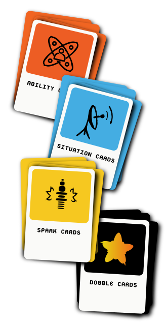

Goals
You are a debater, story-teller and ally looking to create convincing and imaginative narratives about living with disability. You will debate the pros and cons of a given ability in a particular situation.
- Win points by arguing in creative, persuasive and/or logical ways.
- Get a chance to be a referee doling out points to others.
- Most importantly, be a kibbitzer or audience, helping and heckling the debaters.
The winner is the player or team with the most points awarded by the referee for their convincing arguments or stories.
The Cards
Dobble Debate is played with 4 decks of cards.
Ability cards...
describe a range of capabilities, some that are traditionally called disabilities, such as autism, and others that are not usually thought of as a disability, for example synesthesia.Situation cards...
illustrate environments. They range from the everyday, like public toilets to the fantastical, such a s a giant's castle.Spark cards...
are stories from people living with disability. The stories are humourous, everyday narratives and innovation from peoples' daily lives.Dobble cards...
are points. They range from +3 to -1.The Roles
In each game everyone plays each role, changing their position each round.
Pro role...
is the player or team who is using their best arguments to convince the referee that a given ability is an advantage in a particular situation.Con role...
is the player or team who is arguing the disadvantages. They are refuting the Pro's points and putting forward their own.Ref role...
is the player or team who are listening to all the arguments and then deciding how many points, between -1 and 3, they will award to each debater.Kibbitzer role...
is the active audience. While waiting your turn to be Pro, Con or Ref you can hustle, heckle or help the debaters. Kitbbitzer (pronounced kib-it-ser) is a Jewish word. According to Wikipedia it means "a spectator, usually one who offers (often unwanted) advice or commentary".Step-by-Step
Don't worry, no need to memorize the rules. There will be hints throughout the game. But here is an overview...
- The game starts when each player or team is assigned an intial position— Pro (advantages), Con (disadvantages), Ref (referee) or Kibbitzer (audience).
- Then an Ability card is turned over from the top of the deck and read out loud to the whole group.
- Next a Situation card is turned over and read.
- The Pro position player proceeds to argue the advantages of having the ability in the given situation. Another player, the Con position, argues the disadvantages.
- The players can continue to debate refuting each other and perhaps offering other hopefully winning arguments.
- The Kibbitzers in the group can also offer help, ideas, knowledge and comment about the debate.
- But perhaps a debater wants some time to think? Or is coming up with arguments they don't think are very strong? Or maybe the player is just curious to hear stories from people living with different life experiences to theirs to help them
spark their ideas? They can ask for a Spark card to be turned over from the top of the pile. The Spark card can be read, listened to or can be seen as an interpretation in International Sign Language. - The Ref decides when the debate is winding down and then awards each of the debaters points based on the empathy, knowledge, imagination, logic and creativity they have used in their arguments.
- The players rotate their positions and a new round starts.
- The game continues until each of the participants have played all the positions and a winner is declared!